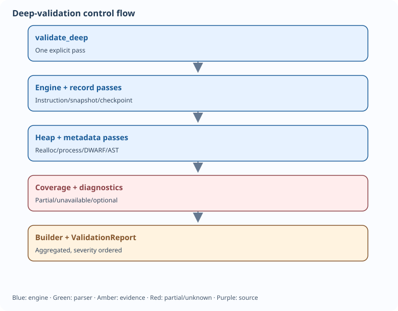
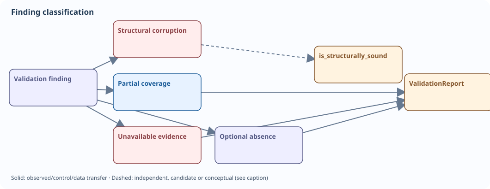

50 · Deep validation and finding classification #
Key terms #
| Term | Plain meaning |
|---|---|
| Validation finding | A report entry with a code, severity and location saying what check failed or what evidence is missing. |
| Aggregation | Repeated findings can be counted together without erasing where they first appeared. |
>
The big picture #
Deep validation is an explicit audit of the imported trace. It is not part of deserialization, and it never rejects a trace. TraceStore::validate_deep() calls validation::validate_deep(&self.trace) and returns a report (src/trace_parser/mod.rs:401-408). TP-6 calls the same pass once when a ValidatedSemanticView is constructed.
Report model #
ValidationSeverity has four categories (src/trace_parser/validation.rs:48-70):
StructuralCorruption: a guaranteed invariant is violated; dependent queries refuse to answer.PartialCoverage: the trace legitimately lacks observations because of caps, retention or interruption.UnavailableEvidence: a relationship cannot be established from recorded evidence.OptionalAbsence: the schema permits the field to be absent.
ValidationLocation identifies the first canonical position for a finding (:75-156). ValidationFinding carries severity, stable code, human detail, location and an occurrence count (:158-171). ValidationReport::findings() returns all findings; of_severity filters; is_structurally_sound() is true only when there are no corruption findings (:193-232). is_partial() is a separate question.
Aggregation #
Builder::push aggregates by (code, severity), preserving the first location and incrementing occurrences (:814-841). finish sorts corruption first, then partial, unavailable and optional (:843-855). This keeps a 94k-event report compact instead of emitting one finding per record.
Orchestration #
validate_deep runs the engine's structural validator first, then a fixed sequence of passes (src/trace_parser/validation.rs:243-267):
crate::processor::validate→ENGINE_STRUCTURAL_VALIDATION- instruction events
- snapshots
- source checkpoints
- heap
- DWARF registry
- AST registry
- source links
- gaps
- coverage
- diagnostics
The function is O(E + S + H + B + L + G) in retained records. It does not require TraceIndexes; it can validate a store built before the current index layer existed.
Instruction events #
validate_instruction_events (:860-1120) checks the orderings used by zero-memory queries: stop_id_before non-decreasing, checkpoint_id non-decreasing, and event IDs/addresses/disassembly references consistent with the canonical arrays. It distinguishes a missing instruction_id (optional/unavailable) from an out-of-range ID (corruption). It also checks memory evidence shape and variable/event references without turning an unreadable read into corruption.
A recorded gap is not an event. An attempted instruction count above the retained event count is a retention fact, not a reason to invent missing events.
Snapshots and source checkpoints #
validate_snapshots (:1123-1250) checks snapshot positions, stop identity, frame/variable/caller references, heap counts, memory status and pointer evidence. It verifies that a snapshot's step_index is its vector position, that source locations are internally consistent, and that referenced records exist. Missing optional capture is unavailable/optional; a reference that cannot resolve is a structural finding.
validate_source_checkpoints (:1419-1459) verifies that every entry in recording.source_checkpoints is a valid snapshot position. An out-of-range entry is corruption; an empty list is normal.
Pointer checks are deep enough to preserve the corrected contract:
- a heap target with an allocation ID but no recorded provenance status is
POINTER_HEAP_PROVENANCE_UNRECORDED(unavailable); - a numeric-address, uncertain, freed or non-heap target claiming a definite ID is
POINTER_HEAP_PROVENANCE_CONTRADICTORY(corruption); - a target identity must be definite, not
unresolved:, and cannot also identify a heap allocation; - an inactive-only variable target, base+offset mismatch, or address outside every recorded extent is corruption;
- a missing target variable at one checkpoint is unavailable, not proof that the activation died.
See pointer and process coverage for the decision tables.
DWARF and AST registries #
validate_dwarf_registry checks duplicate trace-local type, declaration and CU IDs (src/trace_parser/validation.rs:270-315). validate_ast_registry checks duplicate AST declaration/expression IDs and verifies translation-unit, declaration, expression, DWARF and type references (:317-812). A missing optional registry returns without findings. A malformed reference is structural corruption; an absent optional provider is optional absence, not a failed execution.
validate_source_links checks fusion references, member offsets and runtime-variable source bridges. A candidate source relationship is not promoted to execution proof. Invalid links are removed by the engine's construction-time audit and reported here when imported.
Heap, gaps and diagnostics #
validate_heap checks unique state/lifetime IDs, per-PID sequence order, checkpoint intervals, realloc origins, terminal event shape, address presence and history completeness (:1568-1835). Realloc predecessor verification is substantial enough to have its own chapter.
validate_gaps verifies gap positions and ordering; validate_coverage distinguishes configured user-code coverage from observed-PID heap coverage; validate_diagnostics checks report shapes and optional absence. A crash, step cap, missing Valgrind report or partial memory read is a recorded outcome, not corruption by itself.
What this layer does not do #
It does not execute C, evaluate DWARF location expressions, infer an active union member, prove initialization from bytes, or turn an AST line match into a dynamic call. It does not certify all fork descendants. It does not make an independent Valgrind report a primary-run allocation ID. It reports corruption separately from incompleteness so consumers can refuse wrong answers without confusing them with missing evidence.
Tests #
tests/trace_parser.rs and tests/trace_parser_realloc_f01.rs exercise malformed imports, forged pointer/process claims, realloc links and valid partial traces. examples/trace_parser_tp8_mutate.rs and examples/trace_parser_tp8_cycles.rs are preserved audit probes; they are not DOC-3 reruns. The historical TP-8 audit's conditional verdict predates F01; the current source includes the corroboration checks described here.
Diagram notes #
Validation control flow #


Finding classification #

